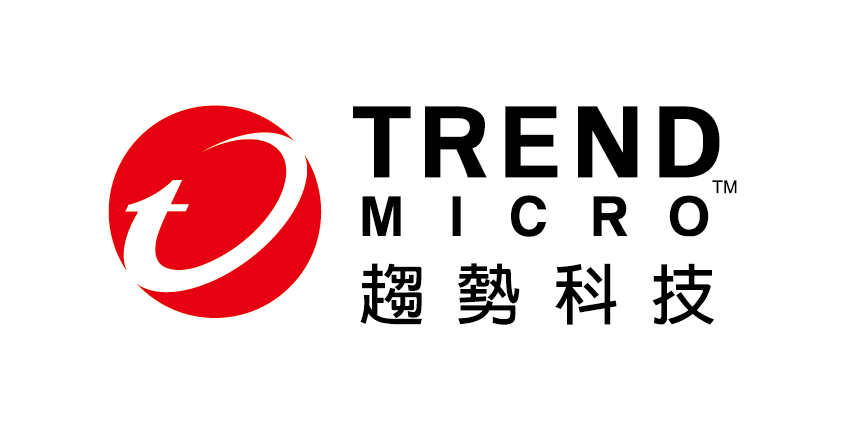

金級

Dcard 是一支致力於讓分享更自由，讓資訊流動更美好的國際團隊。我們提供的社群服務，擁有每個月超越八百萬的不重複訪客，與雙位數的月成長曲線。在學生族群有極高的滲透率，以及超越 Line、Facebook 的黏著時間；在各大媒體有高量的曝光和影響力。
Dcard 於 2011 年由台灣大學學生打造。起初只有抽卡的功能，讓各校生在午夜 12 點抽卡配對；後來加入論壇功能，讓使用者能以全匿名的方式在平台上面討論各種話題，至今演變成擁有百萬量級註冊用戶的社群平台。
我們的團隊雖然年輕，但深藏不漏，有 Github 上一萬八千顆星的大大、國家樂廳常駐二胡大師、還有體重調節師！我們希望創造一個好玩有趣，充滿實驗精神的工作環境，每個角落也永遠有新奇的事在發生。未來我們希望持續為這個社會創造價值及可能性，或許是讓每個人都有話語影響力，亦或是讓每個人能自在的交友，甚至是許多許多現在無法想像的可能性。
你認識趨勢科技嗎? 你認識的趨勢科技是什麼樣貌? 趨勢科技有什麼過人之處，讓FBI自動找上門？讓世界最大跨國警察組織-國際刑警組織(Interpol)搶著跟它合作？ 讓全球50大企業中的48家企業都成為它的忠實客戶? 還讓國內外知名大學拿它當課堂研究案例?現在就來探索你所不知道的趨勢科技：https://careers.trendmicro.tw/
趨勢科技小檔案：
趨勢科技是全球雲端資安領航者，是亞洲與台灣最大的純軟體公司，致力於實現更安全的數位世界。企業版圖橫跨全球五大洲，全球研發基地在台灣。趨勢科技在台灣的全球研發組織完整且多元，共有超過1,000位以上的工程師，負責研發全球超過3千萬名企業、家庭與個人用戶使用的最新及最完整的資訊安全核心技術及產品。另外，趨勢科技在全球的專利申請數上看數百個，其中1/3以上是由台灣同仁提出，顯示台灣研發團隊不僅技術功力深厚，創新動能亦強！
GoAnimate 是一個網上動畫視頻製作平台。我們的使命是希望能讓世界各地的企業，學校和一般人都可以又容易又快速地製作出專業的動畫視頻。
我們的網上平台擁有超過850萬個用戶，商業及個人客戶透過做出高成效,具衝擊力的動畫視頻, 滿足他們各種信息傳播的需要。現今經已有超過2200萬條動畫視頻是使用我們技術製作的。
特別感謝